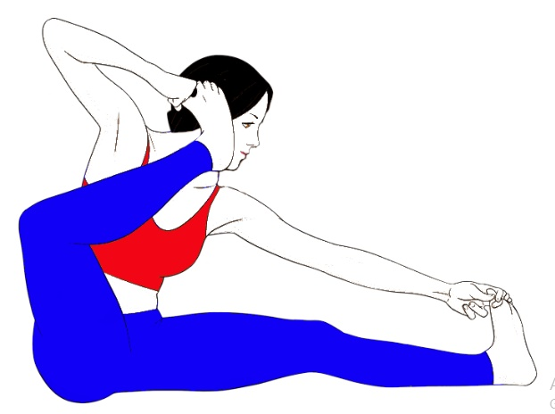
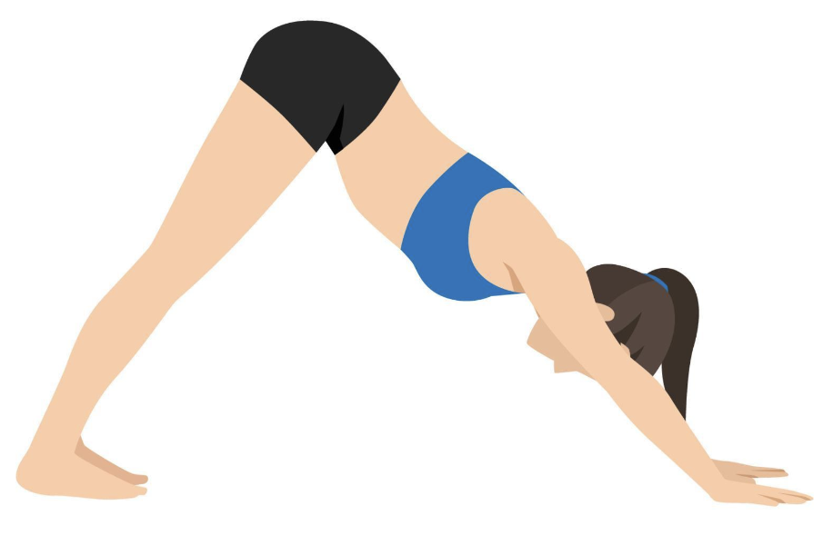
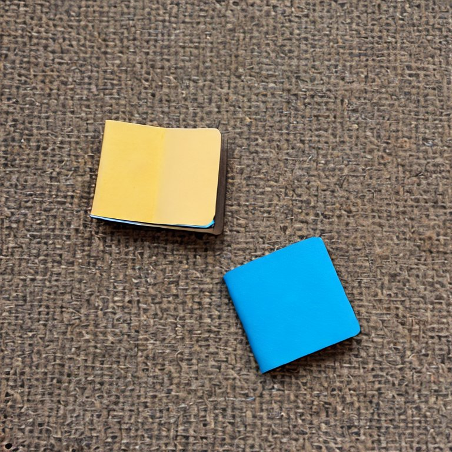

Date: 18 July 2004
To,
Mr. Shashank Dhavala,
Accounts Manager,
Partho Pharmacy Pvt. Ltd. Head Office,
Shop 3-a, Maryland Corner, Sion Circle, Sion,
Mumbai, Maharashtra, India (400006)
Subject: Application for casual leave for 3-5 August 2004.
Dear Sir,
I am requesting a 3-day casual leave for the following reason:
Back in 1997, I shifted to a small town in Jabalpur for a month to work as an audit consultant for a copier company. I was new to the place, and I had no friends or family there, so it took me a while to settle — buying groceries, electric and plumbing repairs, and setting up a routine.
There was nothing unique about my daily routine, sir, except for an intensive half-hour yoga session followed by a very long morning walk. I probably should have done something more productive during that time, but a long walk was what was usually the best part of my day, so I kept at it. While I was quite athletic due to the yoga and many hours of basketball in my teen years, my walks were very much like the swirling currents of water in an ocean — slow and random. I did not like any kind of interference when I went for walks.
When I started my first morning-walk in that small town, I had very little knowledge about the place. I had a habit of not carrying my phone on walks, sir, so I had to make a mental map of the neighborhood to not get lost. I had my own way of doing this — I made a spiral by taking every right turn after “X” blocks of walking straight, where “X” kept on increasing.
But on the very first day, sir, and for every day of my stay in Jabalpur since then, I stopped at X = 3.
☆☆ ☆ ☆ ☆ ☆ ☆
A young girl, maybe about five to ten years, was doing sit-ups in a playground on a tiled open-air gym beside a park. One. Two.
And then she switched to the plank pose. Kumbhakasana. Three seconds.
And then she lifted her right foot against her left thigh and joined her hands. Vrikshasana. The tree pose. Which she maintained for a total of two seconds.
From there, she bent forwards and was on all fours like a dog. Adho Mukha Shvanasana. Again, three seconds.
And then she stood straight facing me with her hands by her side. Tadasana.
Not really.
It was when she didn’t switch the pose that I realized I had been staring at her for over fifteen seconds, and now she was asking me, “What-do-you-want-mister?” with her pose.
With nothing to say, I waved at her. She looked at me for a while and then waved back. I went near her and stood straight. I said, “Hi, I’m Aadi. I just saw you doing some asana poses.”
She nodded.
“Sorry to interrupt, but you were doing them wrong . . a little bit wrong. Were you doing the Suryanamaskara?”, I asked, fully aware that it was none of my business. By the way, sir, all of this conversation happened in Hindi, but I find typing in Hindi very difficult on Microsoft Word 2003.
Suryanamaskara (translation: A Salute to the Sun) is an ancient Indian yoga sequence, sir, of around 10-20 linked poses. Referred to as “The Ultimate Asana”, it is one of the best yoga sequences for the heart, the spine, and the brain.
Also, respected sir, please allow me to tell you how I got deeply interested in Yoga. A couple of years before this day, I was . . . let’s just say I was not in good shape. And then a Yoga teacher from Mysore visited my hometown (Bareilly) for two months. The transformation my body and mind went through in those two months was beyond anything I could describe in words, sir. If you were my colleague, I would have joked that it was a hip-opening experience, but in front of you, I might not make so bold.
Sorry for digressing, lord. Let me get back to the story.
“Were you trying the Suryanamaskara?”, I asked.
She nodded.
Now, she was doing it completely wrong, but I didn’t say so, sir. Here’s what I tried instead: “I know another form of Suryanamaskara, you want me to show you that?”
Once again, she nodded.
☆ ☆ ☆ ☆ ☆ ☆
“First, we have to rise straight and join our palms and look up with a straight spine. It’s called Parvatasana.”, I started.
The mountain pose.
I was standing beside her and doing the asanas, and she was copying them as best as she could. Of course, she needed to be corrected in lots of places, but she was very eager to learn.
“Then we bend down with straight knees and touch the floor with our palms. Padahastasana.”, I said then.
I taught her the Suryanamaskara-A sequence from Vinyasa Yoga:
Parvatasana ➔ Pada Hastasana ➔ Uttanasana ➔ Chaturanga Dandasana ➔ Urdhva Mukha Svanasana ➔ Adho Mukha Svanasana ➔ Uttanasana ➔ Pada Hastasana ➔ Parvatasana ➔ Samasthiti.
She did all of it with patience and maturity that I never imagined such a young kid to possess. But then something happened, my dear sir, that I did not quite foresee.
She said, “I know a Suryanamaskara too. Let me show you that.”
And then she went on to teach me her incorrect routine. And I had no choice but to follow her and learn it. Something told me it was time to leave.
I asked her name.
“Saanvi.”, she said.
“Do you come here every morning, Saanvi?”, I asked.
“Yes, and every evening as well. You can come in the evening.”, she replied.
“I would love to, but I have to work in the evening.”, I said, “see you tomorrow. Bye-bye!”
Saanvi waved back and continued with her practice. I went home and cooked some Poha for breakfast. I went to work after a shower, but I do not need to start talking about my work as an auditor, sir, in front of you.
☆ ☆ ☆ ☆ ☆ ☆
The next morning, at X=3, Saanvi was there in the open-air gym, cycling on a rustic exercise bike. This time she waved first.
“Hello, Saanvi. How are you?”, I said.
“I am good.”, she said.
“So, do you come here every day on your own?”, I asked. I had collected a lot of questions for her in the previous 24 hours.
“I come every morning and evening with an uncle who lives in a house close to our house. He is retired from the army and he teaches me yoga and karate. He has gone somewhere so I am coming alone.”, she explained.
“Got it. So your uncle taught you all these asanas?”, I asked. I didn’t want to presume that it was he who taught them wrong — it was far more likely that Saanvi learned them incorrectly.
She nodded. And suddenly there was a big smile on her face.
“He also taught me horstan. Let me show you how.”, she said.
And then she got into a wide-leg squat and started punching left-right-left with a “Ha” sound with every punch. I did the same.
“What’s it called?”, I asked again.
“Horstan.”, she said.
“Sorry, can you repeat?”, I asked again.
“Horstan.”, she said, a little louder this time.
I swear to you, your reverence, that I had long forgotten this when, months later, I was surfing a random magazine and I came across this pose and found that it was called the “horse stance”. Saanvi probably still calls it horstan.
Sir, it is much easier for kids to answer “Which standard are you in?” versus “How old are you?”. And then, sir, you can add 5 to get their approximate age. So that’s what I asked her.
“Second.”, she said.
“Oh, great! Which school?”, I asked.
“APS Jabalpur.”, she said. I had no idea where it was. But I had much better questions to ask.
“How do you wake up so early?”, I asked. She was too young to have a phone or to know about alarm clocks.
“My mummy wakes me up.”, she said.
“Great. Shall we do some yoga?”, I asked.
She nodded.
☆ ☆ ☆ ☆ ☆ ☆
The next morning, I decided to show her something cool.
“Do you know how to do the Sirsasana?”, I asked.
She nodded. I was surprised, sir. Very surprised.
“Show me.”, I said.
She went down on all fours, sir, and jumped up with her palms on the ground. She was up for a total of zero point four seconds before she came smashing down the ground and hit her shoulder. Her eyes were all watery but she managed to avoid shedding tears.
“It hurts?”, I asked.
She nodded.
“See, Saanvi, the trick is in steady heaves. You should never put your body through sudden, shocking jerks. What she tried to do was a handstand — Adho Mukha Vrikshasana — but she didn’t really have the strength in her upper body and abdomen to do it. But with practice, sir, I was confident that I could teach her the headstand.
I got down on my knees and showed her a proper headstand. And then I told her, “Remember, steady heaves.”
She nodded.
I asked her if she had a mat. She didn’t. She should have definitely gotten one for yoga, but I didn’t press it because I didn’t know whether her family could afford it. Maybe she was poor, sir; I had no way of knowing.
☆ ☆ ☆ ☆ ☆ ☆
Over the next week, sir, which was day 3 to day 10 of my month in Jabalpur, I taught Saanvi a lot of what I knew about Yoga. I taught her the second version of the Suryanamaskara.
I then taught her the Butterfly pose (Purna Titli Asana), the Frog pose (Mandukasana), and the Camel pose (Ustrasana). She loved the poses with animal names, but she was too young to try out some of them (like Bakasana, the Crane pose).
“What do you do?”, she asked me one day.
“I work as an auditor at a copier-making company.”, I said and realized mid-sentence how dumb that was. I tried again.
“I finished my college degree in Accounting and now I work in a job.”, I said. Still dumb.
“I work in a company”, was my final attempt.
She nodded.
“Where do you live?”, she asked.
“In that direction,”, I said, pointing to the left, “around ten houses away, just beside the shops.” I had the habit to switch to kid-friendly units when talking with them.
“Oh, so you can take your pocket money and buy chocolate any time you want!”, said Saanvi.
My lord, she knew that money was supposed to be spent, but I think she thought everyone got their money from pocket money. Maybe she thought her parents got money from her grandparents. Oh boy, maybe she hadn’t met anyone in her seven years of life who didn’t have mummy and papa.
“If you hold me,” she said, “I can do the Sirsasana.”
So then I kept her feet supported for over a minute for her first headstand. It is necessary to keep breathing during the pose, so I kept the conversation going.
“Is your uncle back yet? I would love to meet him.”, I asked.
She shook her head. During the headstand. Wow!
This meant, my lord, that we had to work on correcting several things: She was holding her breath while upside down. She was not fixing her head properly with her hands. Her head wasn’t even touching the ground. Since she was always falling backward, she wasn’t pushing hard enough with her elbows.
This week, we became very good friends, and she showed great progress too — her asanas were now not the two-second incorrect poses that they were previously and instead were much more accurate and graceful.
☆ ☆ ☆ ☆ ☆ ☆
On day 11, sir, out of my month-long visit, when I reached X=3, Saanvi wasn’t there. I looked around the block and waited for well over half an hour, but she didn’t come. I went back to the morning walk that I had planned initially. In my mind, my lord, I was still talking with her, having her mental model inside me answer all the questions I had. She explained all the different scenarios of why she couldn’t come.
It was winter. . . maybe she caught a cold. Or maybe homework. Was her retired uncle back? I realized that I never really asked her where she lived.
She did not come to that park on days 12, 13, and 14 either. It was a very weird thing, but imagining us talking and doing asanas on these days when we didn’t meet made our friendship stronger. And suddenly, I had an idea. It was a Sunday on day 14, so I was free in the evenings. And Saanvi had said that she used to come here in the evenings.
“You can come in the evening.”, she had said.
I found her in the evening sitting on the top of a slide. But never really going down the slide. There really is potential fun and kinetic fun, sir, I can tell you that, and work needs to be done to store potential fun.
But before I tell you about that evening, my lord, since I have promised myself to tell you this story as completely as I can, I need to tell you something. And when you read it, sir, this story will become as much a reflection of me as it has been hitherto of yours.
During the days when Saanvi was not coming in the morning, sir, a small, subconscious part of my mind was resentful — maybe expecting that she should have sent a text saying she wouldn’t be coming. I was fully aware that she didn’t have a phone, but I feel that this world has made me a subconscious slave of expectations, perceptions, and resentment.
I went near her, and she was clearly very happy to see me, but she wasn’t laughing. I waved. She waved back.
“What happened?”, I asked her.
“My mummy is not well.”, she said. “She has a very sharp headache and when she stands, one thing appears like four to her. So if I show her one finger, she sees four. And if I show her four fingers, she can see four, four fingers. I am going to massage her head when I reach home.”
“Oh.”, I said. This news made me sad. My lord, with kids, one doesn’t need to say things like “I’m so sorry to hear that, and do take care, and let me know if there’s anything I can do, and you’re very brave.” Please excuse me, your honor, for not liking solemnities such as these.
“Did she see a doctor?”, I asked.
“Yes”, she said, “My papa is giving her a strong dose of medicine. My mother isn’t telling him this, but she told me in secret that the medicine is not working.”
I did not know how to react to this. I really wanted to help, but I knew there was nothing I could do as a young bachelor with no personal savings. The best I could do was to ask them to consult another doctor, but this would be coming from someone who was also a complete stranger to them.
Or did Saanvi tell her parents about me? I didn’t want to ask, at least now.
“Do you have any brothers or sisters?”, I asked instead.
“I have a sister, Manya.”, she said.
“Oh, nice. How old is she?”, I asked.
“Two years.”, said Saanvi.
“I know how to set an alarm on the phone, but then it would wake mummy because we sleep in the same room. Today I will ask her permission to set an alarm.”, she said.
“Okay.”, I said.
I had once seen Saanvi’s dad who came to look for her towards the end of a long yoga practice because it was time for her to go to school. He seemed like a great person. I didn’t know her mother but prayed that she got well soon.
☆ ☆ ☆ ☆ ☆ ☆
But, my lord, Saanvi did not show up on days 15, 16, and 17 either. I was worried. I could do nothing but wait. There was nothing else that was special about X=3.
I was so happy to see her smiling on a triple twister on day 18.
“Hi!”, I said from twenty meters away. She waved.
When I got nearer, she said “Mummy gave me permission to set the alarm. She is getting better now, and she can walk and do simple things.”
“This is very good. What have you been doing?”, I asked.
“I play cricket and badminton. I am very good at badminton.”, she said. And so, from day 18, she started coming again every morning at 6:00 sharp and was always there waiting for me to arrive around 6:12.
This week, we moved to some advanced asanas. She was quite flexible and was able to do some of them much better than me. But she was pretty bad at holding balancing poses — most kids are. Like their thoughts, their bodies do not like staying still — there’s just too much potential fun stored in them. As we grow, my lord, I feel that the universe dims this flickering candle of playfulness inside each of us.
One such asana was the Akarna Dhanurasana or the archer pose. One had to sit with straight legs stretched outwards and then bend one knee and bring that foot near the ear. This is how it looked:
Saanvi said, “My foot is a phone. Talk with me. Hello.”
And then we used to talk on these foot-phones and play mini-games with them. I am culpable, my lord, of coming up with this one: “There’s a network issue, I can’t hear you properly — let me try with the left side.”
☆ ☆ ☆ ☆ ☆ ☆
It was day 26, sir. I was at X=3 for the third-last time.
I didn’t want to let Saanvi know that I’m leaving Jabalpur. It was quite normal for me to be at places with people for a month and then leave them, but for her, it would be something completely new. Consider this: she had parents, friends, schoolmates, and teachers as constants in her life. She knew new people could come up, like her lovely sister Manya and me. But I couldn’t be the one to tell her that people left too. I just couldn’t.
That day, I didn’t tell her. Instead, I asked her about the thing that had gotten me to come near her and say hello in the first place: yoga.
“Why do you do yoga?”, I asked. Luckily, I didn’t need to add “unlike other kids your age who scroll through memes and play around.”
“I want to represent my school in state competitions. There is a yoga category and I like doing yoga.”, she replied.
By the way, this conversation was happening in Adho Mukha Svanasana (the down-dog pose):
☆ ☆ ☆ ☆ ☆ ☆
It was day 27, and I had decided to give her a parting gift — a yoga mat. I had been contemplating this for quite a while, mostly figuring out whether her parents would be okay with it. But she needed to have a yoga mat — she simply couldn’t do some asanas on the hard floor or grass. And she had given me a gift too last week — a notebook.
It was hand-made and very colorful. But it was not the kind of notebook where you could write stories, my lord. For one, it had just one page. And that page was two centimeters long. She had glued up one for each of us:
I said, “I have a gift for you.” and I pointed toward the yoga mat. I wish I could have said that from now on, we would be practicing yoga on this yoga mat. But I had to follow it up with “I am leaving in a few days.”
My lord, I couldn’t bring myself to say “tomorrow”.
“Where are you going?”, she asked.
“It is a city called Bareilly. My home is very far from here. I am going to go back and live with my parents.”, I said.
“When will you be back?”, she asked. I didn’t know what to say.
“I have another job for two months and I can come and meet you after that.”, I said. Hopefully, people had told her false hope lies before this.
“So you will not come to the park?”, she asked.
I nodded.
“From when?”, she asked.
“I will come tomorrow, and after that, I am going by train.”, I said.
I added, “You have learned a lot, Saanvi. Do keep on practicing everything I taught you. I will do the same from my home. I know that you will be selected from your school. Here, take this.”
I gave her the yoga mat.
“Thank you.”, she said. “When you come back, you can find me here in the morning. In the evenings I’ve started playing cricket with my friends in a garden near my home.”
During that day’s practice, she said “But please teach me Sirsasana. I can’t do that without you.”
She was getting very good at it, but she still needed someone to support her when she went up.
“You can practice it next to a wall.”, I told her. “Just lean back towards a wall and you won’t fall over. After that, slowly try to straighten yourself. I promise you, you will learn very quickly. You can now do a lot of asanas that you could not do initially. Just don’t forget: the trick is in steady heaves.”
☆ ☆ ☆ ☆ ☆ ☆
My lord, the story ends on this last day. We did not talk about it, and I don’t know how Saanvi managed it without an alarm, but both of us reached the park half an hour earlier.
I was explaining to her the next levels and progressions in her journey forwards — some asanas that were difficult for her at her age. When we were done for the day, I asked her if I could drop her at her home.
She nodded.
I took her yoga mat, which she had rolled up in a neat red shoelace. And the last thing that we talked about was this:
She asked, “If we take lots of banana leaves, then we can fly too. We just need to go up the stairs and start slow. Once we can jump from the first stair, we can slowly increase the difficulty.”
“It is very difficult.”, I said. I couldn’t say “impossible”. Kids really were an overflowing spout of imagination. Boundless, and silly.
Without saying anything, she clutched my hand strongly and started crying.
It was at that moment, my lord, that I realized that the retired uncle from the army, who taught her the horse stance, was dead. She did not know about it — she didn’t understand the concept of death — and her parents had told her that her uncle was gone somewhere.
And now I said I was going somewhere.
We reached her home, which was, as I had expected, a small cottage. I gave my greetings to her father in the form of Namaste and then shook her hands saying goodbye to both of them. I left it for her to explain the tears to him later.
“I will come and meet you soon.”, I promised her. And then I walked back to my place.
My lord, there is a child somewhere inside all of us. Practicing yoga for that one month with Saanvi made me love that child inside me much more. And I hope that, if you liked my story, you will appreciate this child too.
It is to fulfill the promise I had made to Saanvi that I request you to grant me this leave.
If you need more details, please feel free to reply to this letter.
I am, yours most sincerely,
Aadi Sharma,
EMID: #32821